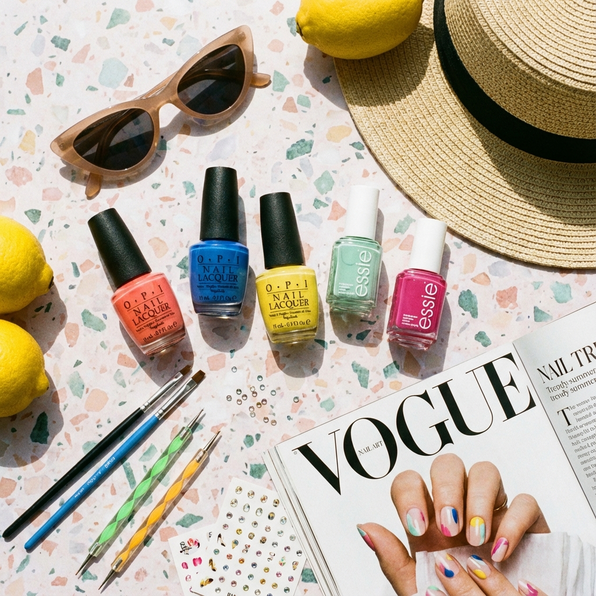

【美甲保養】為什麼凝膠美甲容易拋離？教您 5 大居家維護絕招
許多女孩做完精美的美甲後，常遇到指尖邊緣起泡或扣剝。本文由資深美甲師公開維持度長達 4 週以上的關鍵習慣...
掌握最新時尚潮流與最實用的手足保養密技

許多女孩做完精美的美甲後，常遇到指尖邊緣起泡或扣剝。本文由資深美甲師公開維持度長達 4 週以上的關鍵習慣...

嫁接睫毛後到底能不能用卸妝油？洗臉時該如何清洗眼周？詳細保養步驟帶您延長美睫盛放期...

選對美甲顏色，讓雙手瞬間視覺白三個色號！本期精選 8 款最具討論度的高級感美甲示範...